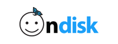

실시간 순위 시안
오른쪽 '웹하드 실시간 순위' 박스의 시안이에요. 실제 사이트와 같은 폭(265px)으로 보여 드려요. 이 페이지는 메뉴에 없고 검색에도 잡히지 않아요.
지금 적용된 버전 · 메달 배지
1~3위를 금·은·동 메달로, 1위 줄은 연한 파란 배경으로 강조해요.
웹하드 실시간 순위
1온디스크8.4K
2케이디스크7.9K
3싸다파일7.1K
4꿀파일6.5K
5파일썬5.8K
시안 B · 파랑 단계 + 왕관
사이트 파랑 한 가지 색으로 1위는 진하게, 3위로 갈수록 옅게 했어요. 1위 배지 위에 작은 왕관을 얹었어요.
웹하드 실시간 순위
1온디스크8.4K
2케이디스크7.9K
3싸다파일7.1K
4꿀파일6.5K
5파일썬5.8K
시안 C · 큰 숫자 + 클릭 막대
배지 대신 큰 순위 숫자를 쓰고, 이름 아래에 클릭 수 비율 막대를 넣어 차이가 한눈에 보여요.
웹하드 실시간 순위
1
온디스크
8.4K2
케이디스크
7.9K3
싸다파일
7.1K4
꿀파일
6.5K5
파일썬
5.8K시안 D · 1위 하이라이트 카드
1위만 로고가 들어간 작은 카드로 크게 보여 주고, 2위부터는 간단한 목록으로 이어가요.
웹하드 실시간 순위
1위온디스크최근 30일 클릭 8.4K

2케이디스크7.9K
3싸다파일7.1K
4꿀파일6.5K
5파일썬5.8K